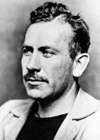

Yirminci yüzyılın en sevilen Amerikalı romancılarından biri olan John Steinbeck (1902-1968), eserlerini yerlisi olduğu California’nın yerel renkleri ile demlendirdi. Çoğu eleştirmen yazımını çağdaşlarınınki kadar zarif ve ses getirici bulmayıp görmezden gelmesine rağmen, okuyucular arasında uzun süre gözde oldu. Her halükârda Steinbeck’in dokunaklı, sembolizm açısından zengin ve sosyal içerikli hikâyelerini ustalıkla işlediği tartışılmaz bir gerçektir.

Steinbeck, San Francisco ile Monterey arasındaki tarım bölgesinin kalbinde, California, Salinas’ta dünyaya geldi. Stanford Üniversitesi’nde ve çeşitli ağır işlerde çalışarak geçirdiği yıllardan sonra, 1920’lerin sonlarında azimli bir şekilde yazmaya başladı. Fakat bu yöndeki ilk birkaç girişimi hem eleştirel hem de ticari anlamda başarısızlıkla sonuçlandı. Nihayet Steinbeck, Büyük Buhran zamanında Monterey’de yaşayan paisanolar (ABD’deki Meksikalılar için kullanılan, ‘hemşeri’ anlamına gelen bir sözcük) hakkındaki Yukarı Mahalle (1935) adlı romanıyla başarıyı yakaladı. Bunu, bir California çiftliğindeki iki göçmen işçi olan Lenny ve George’un dokunaklı hikâyesi Fareler ve İnsanlar (1937) adlı kısa romanı takip etti.
Steinbeck’in başyapıtı ve en ünlü çalışması, kuraklığın vurduğu Midwest’ten kaçıp California’ya daha iyi bir hayat aramaya gelen Dust Bowl “Okies” ailesi hakkındaki Gazap Üzümleri (1939) adlı romanıdır. Son derece yoksul ve bir o kadar da dürüst insanlar olan Joad’lar yolculuk boyunca büyük zorluklarla yüzleşir, fakat karşılıklı fedakarlıkları ve kırılmaz aile bağlarından aldıkları güç ve umutla bunlara göğüs gererler. Romanın etkisi büyük oldu ve Buhran günleri yoksulluğunun kötü şartlarına emsalsiz bir şekilde dikkatleri çekti. O zamandan bu yana İngilizce müfredatın hem en temel, hem de en popüler yazarlarından biri olarak kaldı.
Meslek hayatının sonlarında Steinbeck, değişen başarı seviyelerinde farklı tür ve biçimlerle hevesli denemeler yaptı. Bu çağdan geriye, Monterey’in sanayi mahallesinde geçen pikaresk bir hikâyesi olan Sardalye Sokağı (1945) ve “Yaratılış” kitabının Salinas Vadisi ortamında yeniden anlatımı olan Cennetin Doğusu (1952) kitapları kaldı. Steinbeck, Cennetin Doğusu’nu en iyi eseri –ve inkar edilemez şekilde en çok satan romanı– olarak düşünmesine rağmen eleştirmenler onu fazla nasihatçı ve sert buldular. Yine de, bölgenin tarihinin ve insanlarının ayrıntılı ve zengin bir resmini sunarak, Steinbeck’in California’nın önde gelen edebî yorumcusu olma şöhretini pekiştirdi,
1962’de Steinbeck, “sempatik mizahı keskin bir sosyal algıyla birleştiren... gerçekçi ve düşsel yazıları” sayesinde edebiyat dalında Nobel Ödülü’nü almaya hak kazandı. Bu eşsiz kabiliyeti –fakirliğin acımasız ve sert bir betimlemesiyle kuşatıcı bir iyimser bakışın birleşimi– Steinbeck’e Amerikalı romancılar arasında kalıcı bir yer kazandırdı.
EK BİLGİ:
1. Nobel Ödülü kabul konuşmasında Steinbeck, “İnsanın mükemmelliğine tutkuyla inanmayan yazarların, edebiyata ne bağlanabileceğini ne de bir aidiyeti olabileceğini,” belirtti.